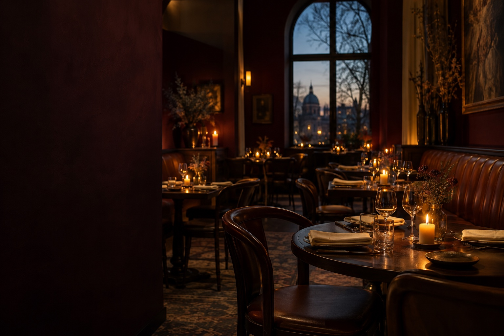
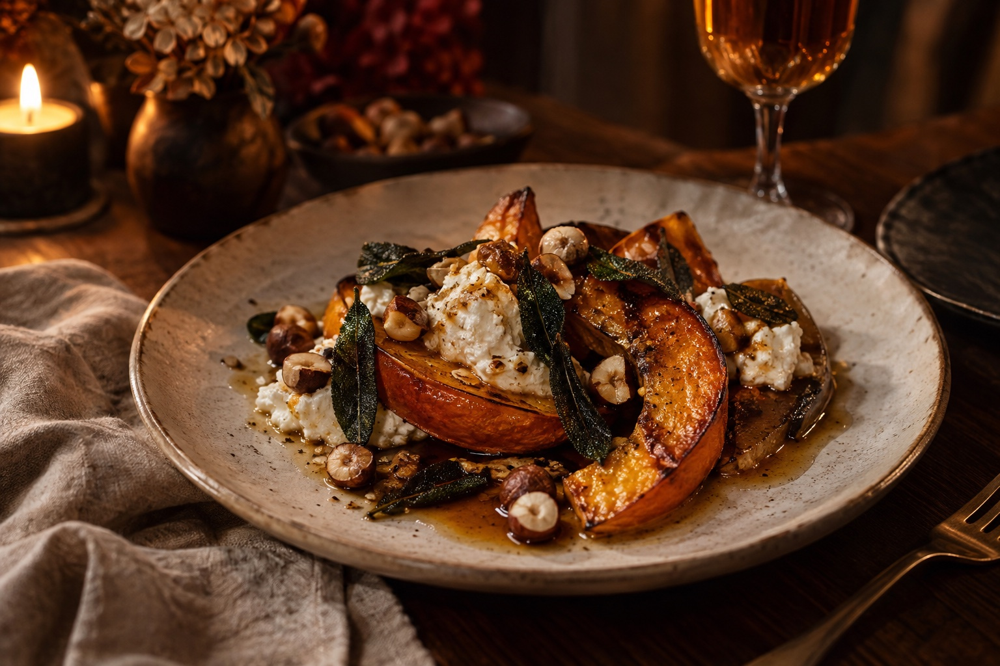

Sourdough & cultured butter
Warm loaf, flaky salt

Seasonal kitchen & wine · Berlin
A changing season. A familiar table.
Somewhere to stay a little longer.
The best evenings are the ones you don't hurry.

A seat at our table
We imagine LUMA as a little pocket of warmth in Berlin. A kitchen led by the season, wine chosen with curiosity, and tables where conversation has room to wander.
No grand occasion needed. Just good company, something delicious, and the pleasure of being here.
See you when the candles are lit.An evening, imagined
Try our local reservation demo.
Choose a day, bring your favourite people.
Berlin · Fictional restaurant, no visiting address.